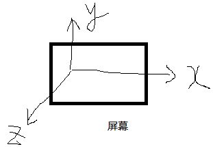

X
Y
Z
Z
perspective属性设置镜头到元素平面的距离。所有元素都是放置在z=0的平面上。比如perspective(300px)表示，镜头距离元素表面的位置是300像素。
设置之后，就可以有近大远小的效果。
transform:perspective(100px) rotateX(45deg);
transform:perspective(100px) rotateY(45deg);
transform:perspective(100px) rotateZ(45deg);
perspective属性设置镜头到元素平面的距离。所有元素都是放置在z=0的平面上。比如perspective(300px)表示，镜头距离元素表面的位置是300像素。
设置之后，就可以有近大远小的效果。
transform:scale3d(0.5,2,3);
transform:translate3d(50px,150px,250px);